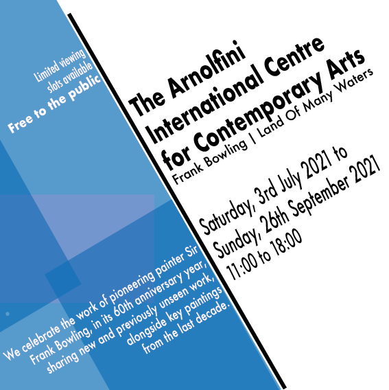
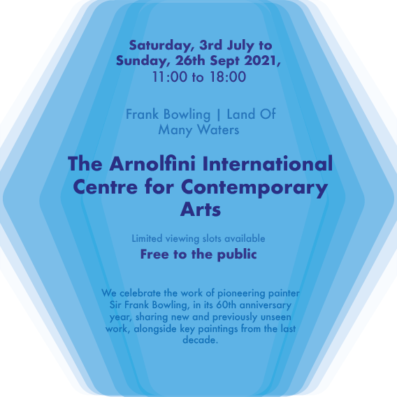
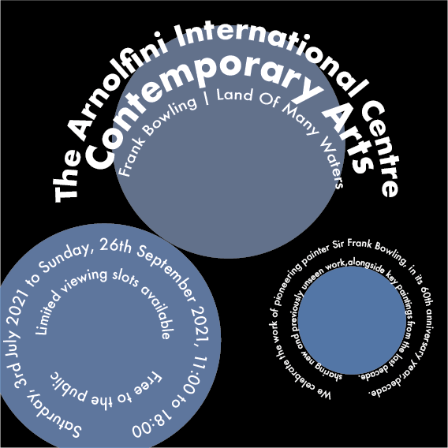
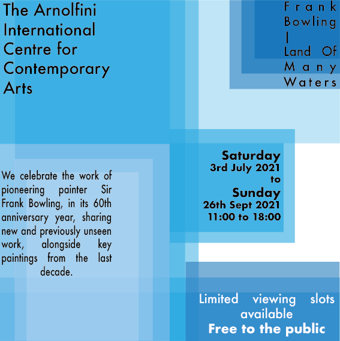
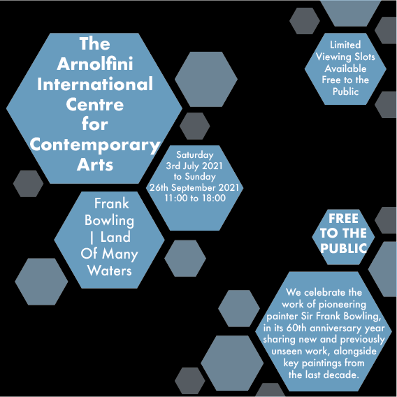
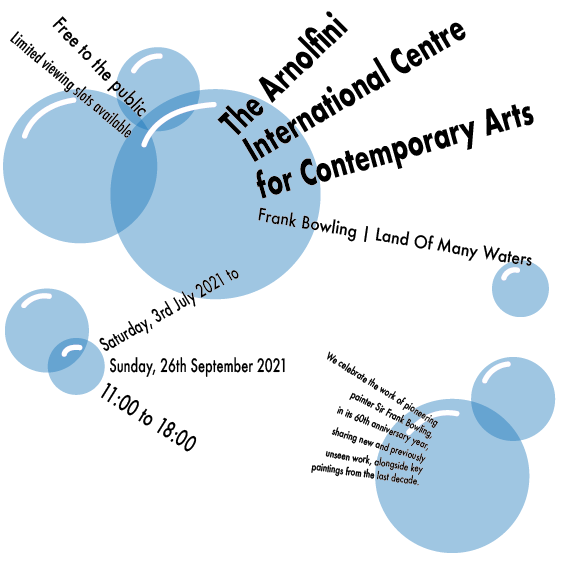
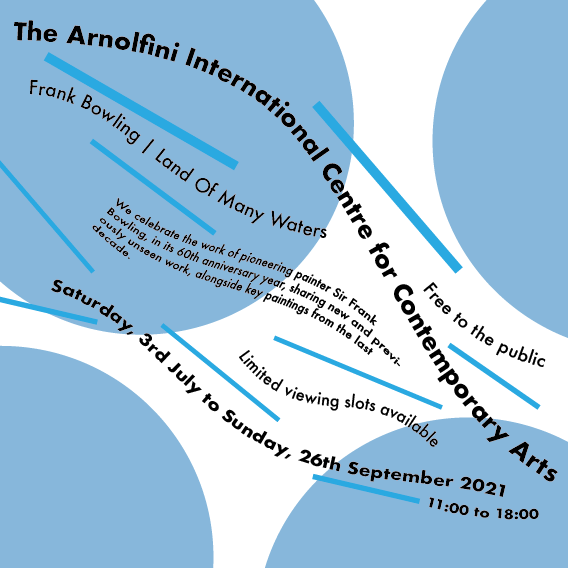
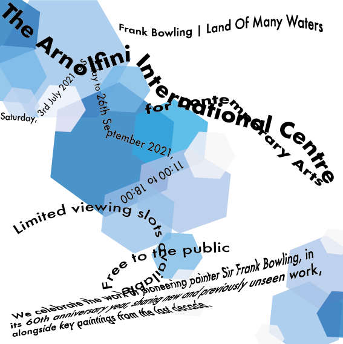

TYPOGRAPHIC SYSTEMS
In Design there are 8 different types of typographic systems they are Axial, Bilateral, Dilatational, Grid, Modular, Radial, Random and Transitional. Below are 8 different images of examples of the systems used to advertise the The Arnolfini International Centre for Contemporary Arts, and the work of the painter Sir Frank Bowling. We used Adobe Illustrator for creating the images.

Axial is where the text is aligned left or right down either side of a central line. Here I have
showed that and added in a bit of contrast by using the blue on one side.

Bilateral is like Axial, however instead of being on either side, the text is centred down the
middle. You can use this formula multiple times on one page however I have just used it once, I have
used the text at different sizes to show hierarchy of the information.

Dilatational involves the use of circles and text is wrapped around an invisible circle. I feel that
this style of system goes well with rounded shapes, so I have used circles and I like the design of
this as it is simple yet effective.

Grid is as it sounds, there is an invisible grid on the screen and the text lines itself up within
the grid even though the rest of the other shapes don’t necessarily follow the same grid. I used
different tones of the blue to create a bit more dimension.

Modular is a repetitive use of the same shape/design in the same image to create unity. I have used
hexagons for this and have the text inside, I have also included other hexagons in the design to tie
the text together.

Radial can be described like rays from the sun, the text comes out from round a centre point of
alignment. I have used circles to create a bubbly look and feel it works well with the system.

Transitional is not widely used and resembles much like layers of the earth or flowing like a river.
I have tried to re-create the river look by using blue rectangles as well as the blue in the
background of the design.

Random has no clear typographical system, there is no order to it and the text doesn’t have to be
legible. I have used a series of random hexagons in different sizes and tones to carry on this
theme. The text itself I have used a few different techniques to make it even more random.